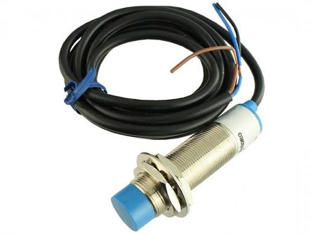

Sensor Capacitivo
Sensor de proximidade que detecta materiais condutores ou não condutores por variação de campo elétrico.
Conceito e Aplicação
O sensor capacitivo detecta a aproximação de qualquer material — sólido, líquido ou em pó — a partir da variação de capacitância gerada entre o sensor e o objeto, sendo o único tipo de sensor de proximidade capaz de detectar materiais não metálicos diretamente.
- Detecta metais, plásticos, vidro, líquidos e pós
- Sensibilidade ajustável conforme a aplicação
- Sem contato físico com o material
- Sensível a umidade e poeira no ambiente

Informações Complementares
Funcionamento
Gera um campo eletrostático na face sensora; quando um objeto se aproxima, altera a capacitância do circuito oscilador interno, o que é interpretado como presença do objeto.
Aplicações
Detecção de nível em silos e tanques, contagem de embalagens plásticas e controle de presença de líquidos através de recipientes não metálicos.
Vantagens
Capacidade de detectar materiais não metálicos e de "enxergar" através de paredes finas não condutoras, algo que sensores indutivos não fazem.
Empresas
Alguns dos principais fabricantes que produzem este tipo de sensor.
Fabricante alemão especializado em sensores industriais robustos para detecção, nível, pressão e temperatura.
Empresa alemã referência em sensores optoeletrônicos, pioneira em soluções fotoelétricas e de segurança industrial.
Fabricante alemão com forte atuação em sensores indutivos, capacitivos e ultrassônicos para ambientes exigentes.